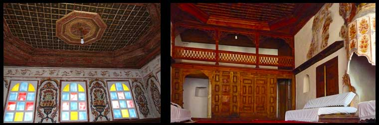
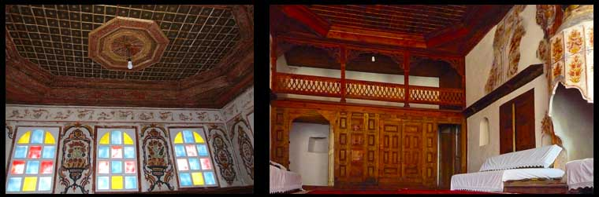

“EKZEMPLARI MË I MIRË I KULLËS SË TIPIT OTOMAN QË KA MBIJETUAR NË GJIROKASTËR”
Shtëpitë e larta të fortifikuara të tipit kullë(fjala kullë e ka origjinën nga turqishtja) u përkisnin pronarëve të pasur, si zyrtarëve të administratës ose tregtarëve. Ato kanë të gjitha një kompozim bazë: një kat të poshtëm ndërtuar detyrimisht prej guri për arsye sigurie, dhe në katet më të larta janë vendosur dhomat kryesore për familjen, zakonisht me shumë kurorë. Nëpër mure ka frëngji për të mundësuar mbrojtjen nga armiqtë. Shtëpia e Zekateve është një shembull i mrekullueshëm i kullës tipike. Ndërtuar më 1811-1812 me dy kulla binjake dhe një harkatë të madhe të dyfishtë. Prej këtu pamjet nga lart e qytetit dhe të luginës së lumit Drino janë spektakolare.
Shtëpia ka tre kate, ku i poshtmi përmban dhomat e magazinimit, një kuzhinë të lartë dhe sterat e ujit, si dhe shkallët që gjarpërojnë lart për në katet e tjera. Kati i dytë ka dhomat kryesore, që shërbenin për degë të ndryshme të familjes, ndërsa kati sipërm ka një dhomë të madhe pritjeje dhe dy dhoma të tjera. Dhoma kryesore është tipike për shtëpitë më madhështore të Gjirokastrës me mure me afreske, tavan druri të gdhendur dhe oxhak të zbukuruar. Ky kat i fundit ishte i destinuar për t’u përdorur nga e gjithë familja. Në qendër të katit, pranë shkallëve është një ballkon druri që mbizotëron mbi qytet. Një pjesë e tij është më e ngritur e rezervuar për kreun e familjes, ku ai qëndronte dhe gostiste miqtë dhe shikonte se ç’ndodhte në qytetin poshtë këmbëve.


 
